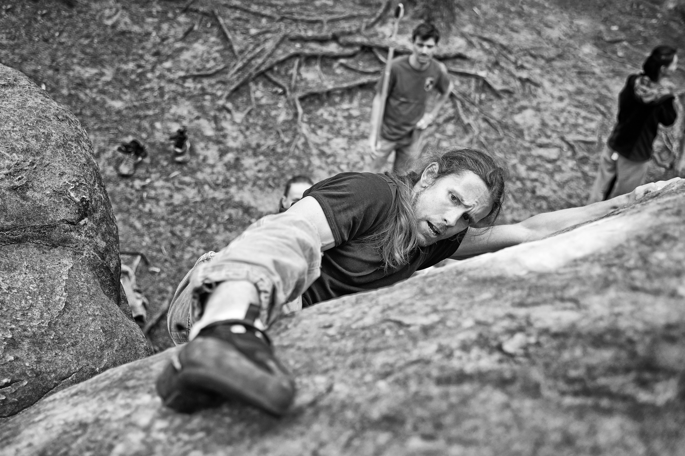

En bref
Climber, Gamer, Math Teacher
Titulaire d'un doctorat en informatique, j'ai étudié le comportement de la triangulation 3D de Delaunay de points aléatoires sur une surface. Une belle opportunité de mêler probabilité, géométrie et informatique.
Sportif, je pratique régulièrement l'escalade. Dans une recherche d'esthétique et d'optimisation.
Accessoirement, j'ai une affection particulière pour le bricolage et les jeux vidéo rétro.
À propos de moi
J'ai grandi dans les années 90. À la frontière entre l'analogique et le numérique. Dans le village d'Haironville, j'ai évolué avec les copains à construire des cabanes, à grimper dans les arbres, à jouer à la Game Boy et à Mario Kart 64 sur écran splité, à faire du vélo, du skate et tous les autres trucs stéréotypiques de cette époque incroyable. Au château de la forge, restauré par mes parents, je me suis construit dans un climat calme, sain et culturellement riche. Je me revois, enfant, à lire l'Encyclopædia Universalis et découvrir ce qu'est un quark. Ces éléments auront façonné définitivement mon évolution.
Mes diplômes de Mathématiques en poche, j'intègre le corps enseignant dans l'Aveyron. C'est aussi l'année où je m'initie à l'escalade. Cette discipline ne me lachera plus, et je suis toujours à la recherche de voies à découvrir, à déchiffrer, puis à enchaîner. La grimpe m’apporte un équilibre essentiel : concentration, stratégie, dépassement de soi. Dans le mouvement, l’optimisation, et l'esthétique. Le mouvement, c'est peut-être ce qui me pousse à quitter temporairement (ou pas) l'enseignement pour élargir mes connaissances mathématiques. Je découvre la géométrie algorithmique, à la jonction entre les maths et l'info. Un des concepts de géo-algo est la triangulation de Delaunay, j'en ferai le sujet de mon doctorat.
Après le décès de ma mère, je me relocalise en Meuse, à Bar-le-Duc. C'est une période d'introspection, une pause réflexive. Je m'intéresse, trop tard, à ma généalogie maternelle : mon arrière-arrière-grand-mère est Mme Roussey, gérante de la maison "À la croix de Lorraine", qui fabriquait les célèbres confitures de groseilles épépinées à la plume d'oie. Je découvre aussi l'histoire, marquée par les guerres, de mes ancêtres. Pour le souvenir de ma mère, je répertorie et encadre les soies qu'elle a peintes. Pour mon père, qui s'est mis en tête de restaurer une maison à 80 ans, je bâtis un charpente traditionnelle en bois. J'en ferai temporairement mon métier.
C'est l'ensemble de ces sujets que j'aborde dans ce blog. Profitant de mon inaptitude à trouver un travail stable, j'écris sur le temps libre qui m'est, loin de m'en plaindre, imposé. On y retrouve entre autres mon sujet de thèse, une partie de ma généalogie, mon premier 8A... Un peu de science, de jeu vidéo et de sport. Une somme éparse qui me ressemble plutôt bien.